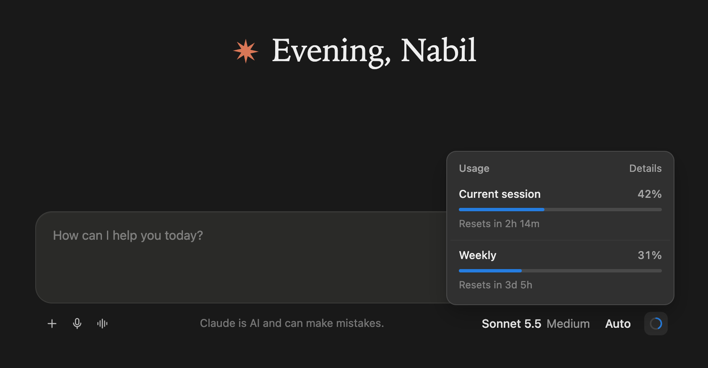
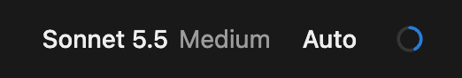
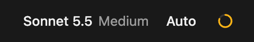
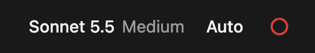
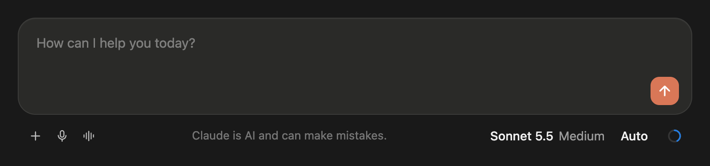
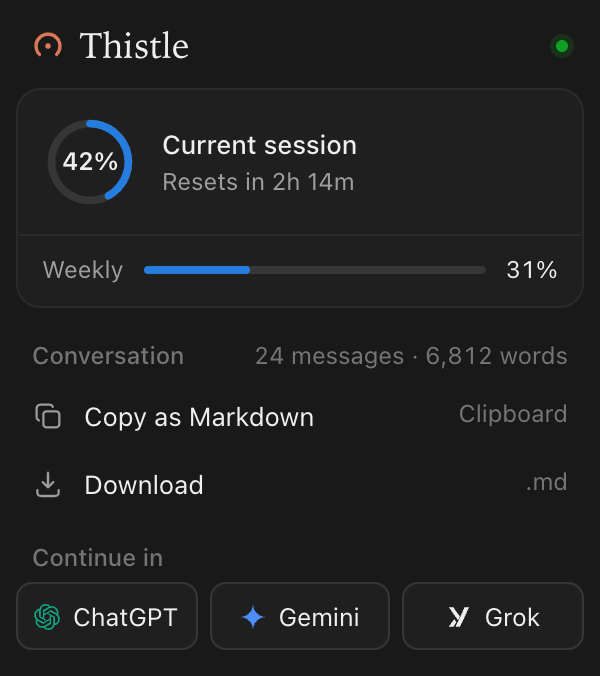
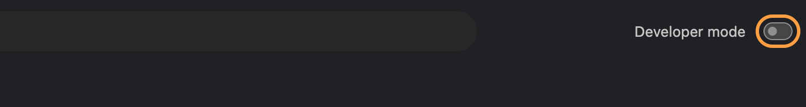
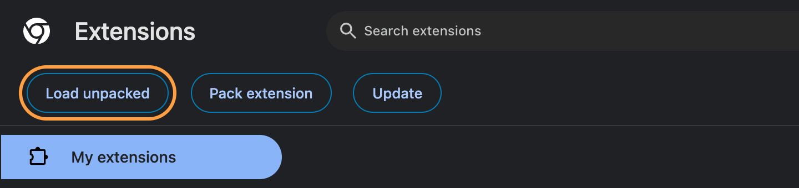
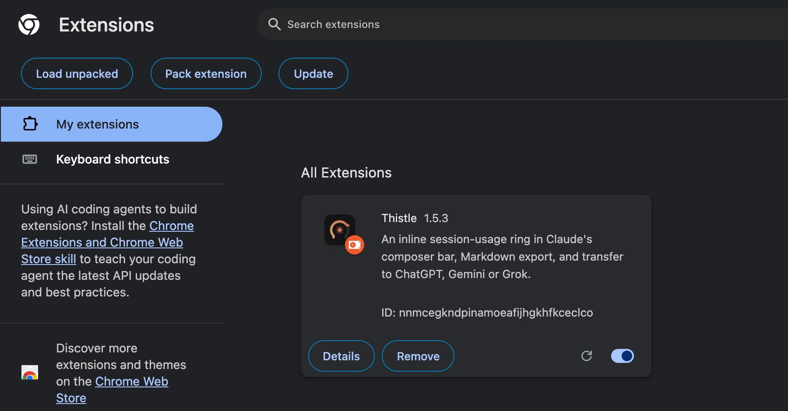

For Claude on the web
Know your limit
before you hit it.
A small ring in Claude's chat bar shows how much of your session you've used, and when it resets. Thistle also exports conversations and continues them anywhere.
Free. No account. Nothing leaves your browser.

The ring
One glance.
No surprises.
It sits in the corner of the chat bar, right after the model name, the same place Claude Code puts its own. It fills as you use your session and changes colour as you get close.



Made to look like it was always there.
Thistle draws with Claude's own colours, so it switches between light and dark with the page. It adds the ring to the end of the line and leaves everything else exactly where Claude put it.
- Click the ring for your session and weekly limits
- Hover for the exact percentage and reset time
- Updates live while Claude replies
- Hidden on Claude Code, which has its own


The popup
Take the conversation
anywhere.
Copy or download any Claude chat as clean Markdown, with code blocks, lists and tables intact. Or open it in ChatGPT, Gemini or Grok, typed into the box and ready to continue.
- Real Markdown, not a wall of text
- Shows the size before you copy
- One click to continue somewhere else
Privacy
Your chats stay yours.
Thistle runs entirely in your browser. It reads the usage figure Claude already shows you, and nothing else ever leaves your computer.
No accounts
Nothing to sign up for, nothing to log in to.
No tracking
No analytics and no data collection of any kind.
Open source
Plain, readable code. See it on GitHub.
Install
Two minutes. Two browsers.
Thistle is on Firefox Add-ons.
Install it like any other add-on. It updates itself.
Add to Firefox- Open the link and click Add to Firefox.
- Click Add when Firefox asks.
- Open claude.ai. The ring appears under the chat box.
Install for Chrome in developer mode.
Thistle isn't on the Chrome Web Store yet, so Chrome installs it from a folder. It takes about two minutes. This works in Chrome, Edge, Brave and Arc too.
-
1
Unzip it
Open your Downloads folder and double-click
thistle-chrome.zip. You'll get a folder calledthistle-chrome.Keep this folder somewhere safe, like your Documents. Chrome runs Thistle from it, so if you delete it Thistle stops working.
thistle-chrome.zipthistle-chromeIllustration -
2
Turn on Developer mode
In Chrome's address bar, type
chrome://extensionsand press Return. Then switch on Developer mode in the top-right corner.
-
3
Load the folder
Click Load unpacked, which has just appeared on the left. Choose the
thistle-chromefolder from step 1, the folder itself and not the zip, then click Select.
-
4
That's it
Thistle shows up in your extensions. Click the puzzle piece in Chrome's toolbar and pin Thistle to keep the popup one click away. Then open claude.ai.

Updating later
Download the new zip and unzip it over your old thistle-chrome folder. Then click the round reload arrow on Thistle's card in chrome://extensions.
Questions.
Why does Chrome show a "developer mode" warning?
Chrome reminds you about any extension that isn't from the Chrome Web Store. It's expected for Thistle. You can close the reminder, and Thistle keeps working.
Where does the usage number come from?
From claude.ai itself, the same figure Claude uses for its own usage limits. Thistle asks your open Claude tab for it, so it uses your existing sign-in and nothing is sent anywhere else.
The ring isn't showing.
Reload the Claude tab once after installing. The ring appears on Claude chat pages, under the chat box. It's hidden on Claude Code on the web, which already has its own.
Does it work on the free plan?
Yes. Before you've sent a message in a session the ring shows 0%, and it fills as you go.